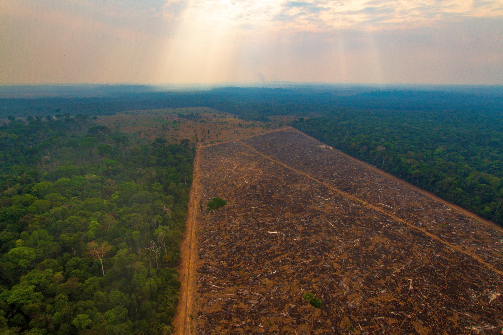
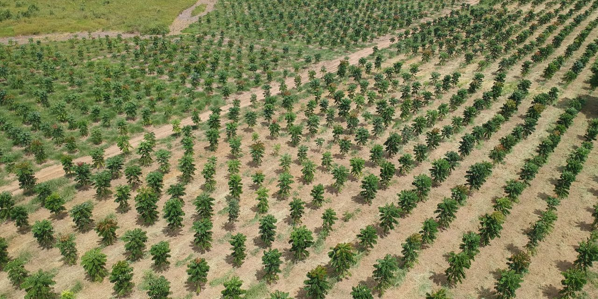

O que você pensa quando se fala em sustentabilidade ambiental? Provavelmente em plantar novamente o que foi tirado, mas é tão fácil assim?

Por muito tempo as pessoas retiraram recursos renováveis sem recoloca-los e isso vem gerando grande impacto no meio ambiente acabando com a biodiversidade e até mesmo extinguindo algumas espécies.
Um meio de prevenir isso seria replantando as árvores derrubadas, mas mesmo assim, ainda seria muito prejudicial, pois árvores demoram para crescer, e, por esse motivo o desmatamento ainda seria gigante, pois enquanto o processo de crescimento ocorre milhares ou até mesmo milhões dessas plantas são derrubadas.
Esse meio seria muito útil a longo prazo, mas como não podemos ficar sem matéria-prima o desmatamento continuará ocorrendo.
Mas ainda assim, esse meio é infinitamente melhor do que apenas retirar, já que em teoria ninguém iria remover árvores pequenas. Se todos os que tiram colocassem de volta, no futuro o desmatamento não ocorreria com tanta intensidade como hoje em dia.